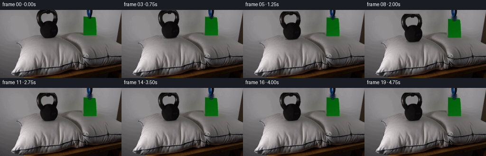
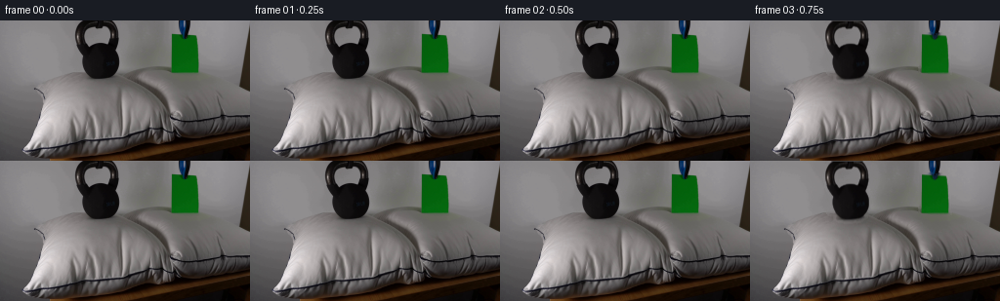

CODING AGENTS AS PIXEL WORLD MODELS
traex/GPT-5.6-Sol · 0193
点击播放 · 原生 RGB 像素
逐轮保存的候选
回放视频、检查图与代码变化。
每份候选均可单独播放。实际图片检查记录在下方工具轨迹中。
候选 01播放与检查图
点击播放 · 原生 RGB 像素


展开代码变化
--- 上一保存版本
+++ 本次保存版本
@@ -0,0 +1,198 @@
+"""Generate the requested locked-camera pillow demonstration.
+
+The supplied photograph is used as the plate and also as the source of the
+two moving objects. Masks are derived only from its RGB values. During the
+placement the pillow below the kettlebell is displaced with a smooth analytic
+deformation field; the much lighter sheet produces only a minute depression.
+"""
+
+from pathlib import Path
+
+import cv2
+import numpy as np
+from PIL import Image
+
+import artifact_io
+
+
+ROOT = Path(__file__).resolve().parent
+H, W = 144, 256
+
+
+def smoothstep(x):
+ x = np.clip(x, 0.0, 1.0)
+ return x * x * (3.0 - 2.0 * x)
+
+
+def component_at(binary, point):
+ """Return the connected component containing (x,y), as a float mask."""
+ n, labels, stats, _ = cv2.connectedComponentsWithStats(binary.astype(np.uint8), 8)
+ x, y = point
+ label = int(labels[y, x])
+ if label == 0:
+ # A safe fallback for tiny changes in source encoding.
+ candidates = np.arange(1, n)
+ label = int(candidates[np.argmax(stats[candidates, cv2.CC_STAT_AREA])])
+ return (labels == label).astype(np.float32)
+
+
+def make_masks(rgb):
+ """Build soft mattes for the dark kettlebell and green paper."""
+ f = rgb.astype(np.float32)
+ lum = f.mean(axis=2)
+
+ # Estimate the wall/fabric colour behind the kettlebell from narrow strips
+ # on either side. Its row-dependent gradient makes this more reliable than
+ # a global black threshold.
+ yy, xx = np.mgrid[0:H, 0:W]
+ left = np.median(lum[:63, 67:73], axis=1)
+ right = np.median(lum[:63, 127:133], axis=1)
+ frac = np.clip((np.arange(W) - 70.0) / 60.0, 0.0, 1.0)
+ expected = left[:, None] * (1.0 - frac[None, :]) + right[:, None] * frac[None, :]
+ score = np.zeros((H, W), np.float32)
+ score[:63] = expected - lum[:63]
+ roi = (xx >= 74) & (xx <= 124) & (yy <= 62)
+ seed = roi & (score > 16.0) & (lum < 112.0)
+ # Closing gathers highlights into the body while preserving the large hole
+ # in the handle (the kernel is deliberately much smaller than the hole).
+ seed = cv2.morphologyEx(seed.astype(np.uint8), cv2.MORPH_CLOSE,
+ cv2.getStructuringElement(cv2.MORPH_ELLIPSE, (3, 3)))
+ kettle_hard = component_at(seed, (101, 35))
+ # Add dark highlight islands enclosed by the body silhouette.
+ kettle_hard = cv2.morphologyEx(kettle_hard, cv2.MORPH_CLOSE,
+ cv2.getStructuringElement(cv2.MORPH_ELLIPSE, (3, 3)))
+ edge = cv2.GaussianBlur(kettle_hard, (0, 0), 0.62)
+ confidence = np.clip((score - 5.0) / 18.0, 0.0, 1.0)
+ kettle = np.minimum(edge, np.maximum(kettle_hard * 0.96, confidence * edge))
+ kettle *= roi.astype(np.float32)
+
+ # Green chroma gives an exceptionally clean matte for the paper. Build a
+ # broad seed first, retain only its component, then recover anti-aliased
+ # green edge pixels with a continuous chroma score.
+ r, g, b = f[:, :, 0], f[:, :, 1], f[:, :, 2]
+ green_excess = g - np.maximum(r, b)
+ proi = (xx >= 157) & (xx <= 207) & (yy >= 10) & (yy <= 58)
+ pseed = proi & (green_excess > 14.0) & (g > 45.0)
+ paper_hard = component_at(pseed, (188, 35))
+ paper_near = cv2.dilate(paper_hard, np.ones((3, 3), np.uint8))
+ paper = np.clip((green_excess - 2.0) / 15.0, 0.0, 1.0) * paper_near
+ paper = np.maximum(paper, paper_hard * 0.98)
+ paper = cv2.GaussianBlur(paper, (0, 0), 0.35)
+ paper *= proi.astype(np.float32)
+ return np.clip(kettle, 0, 1), np.clip(paper, 0, 1)
+
+
+def clean_plate(rgb, kettle, paper):
+ """Inpaint only portions exposed by the short downward translation."""
+ mask = ((kettle > 0.05) | (paper > 0.05)).astype(np.uint8) * 255
+ mask = cv2.dilate(mask, cv2.getStructuringElement(cv2.MORPH_ELLIPSE, (5, 5)))
+ # TELEA is used only for the hidden wall/background plate, never for an
+ # output object. A small radius preserves the source photograph's gradient.
+ return cv2.inpaint(rgb, mask, 5.0, cv2.INPAINT_TELEA)
+
+
+def pillow_warp(plate, amount):
+ """Depress the two pillow surfaces with smooth, fixed-camera remaps."""
+ yy, xx = np.mgrid[0:H, 0:W].astype(np.float32)
+
+ # Heavy, compact load under the kettle. The depth fades into the pillow,
+ # and a slight outward displacement conveys lateral bulging of the fill.
+ gx = np.exp(-0.5 * ((xx - 102.0) / 18.0) ** 2)
+ gy = np.exp(-0.5 * ((yy - 70.0) / 22.0) ** 2)
+ gate = smoothstep((yy - 53.0) / 7.0) * (1.0 - smoothstep((yy - 119.0) / 12.0))
+ down = 7.0 * amount * gx * gy * gate
+ sideways = 1.45 * amount * ((xx - 102.0) / 18.0) * gx * gy * gate
+
+ # The paper's pillow yields by less than half a pixel: visible enough to
+ # settle naturally, but negligible compared with the 30-lb mass.
+ pgx = np.exp(-0.5 * ((xx - 189.0) / 15.0) ** 2)
+ pgy = np.exp(-0.5 * ((yy - 62.0) / 17.0) ** 2)
+ pgate = smoothstep((yy - 52.0) / 5.0) * (1.0 - smoothstep((yy - 100.0) / 10.0))
+ down += 0.38 * amount * pgx * pgy * pgate
+
+ map_x = xx - sideways
+ map_y = yy - down
+ return cv2.remap(plate, map_x, map_y, cv2.INTER_CUBIC,
+ borderMode=cv2.BORDER_REFLECT_101)
+
+
+def soft_ellipse_shadow(frame, center, radii, opacity):
+ yy, xx = np.mgrid[0:H, 0:W].astype(np.float32)
+ cx, cy = center
+ rx, ry = radii
+ a = opacity * np.exp(-2.1 * (((xx - cx) / rx) ** 2 + ((yy - cy) / ry) ** 2))
+ # Warm neutral shadow; multiplicative shading retains all fabric texture.
+ return frame.astype(np.float32) * (1.0 - a[:, :, None])
+
+
+def translated_layer(rgb, alpha, dx, dy, flex=0.0):
+ """Translate a source layer, with an optional tiny paper flex."""
+ # flex gently shears the bottom of the paper at contact, without making it
+ # appear rubbery. It is zero for the rigid kettlebell.
+ yy, xx = np.mgrid[0:H, 0:W].astype(np.float32)
+ shear = flex * np.clip((yy - (37.0 + dy)) / 22.0, 0.0, 1.0)
+ map_x = (xx - dx - shear).astype(np.float32)
+ map_y = (yy - dy).astype(np.float32)
+ col = cv2.remap(rgb, map_x, map_y, cv2.INTER_LINEAR,
+ borderMode=cv2.BORDER_CONSTANT, borderValue=0)
+ a = cv2.remap(alpha, map_x, map_y, cv2.INTER_LINEAR,
+ borderMode=cv2.BORDER_CONSTANT, borderValue=0)
+ return col.astype(np.float32), np.clip(a, 0, 1)
+
+
+def composite(frame, layer, alpha):
+ a = alpha[:, :, None]
+ return frame * (1.0 - a) + layer * a
+
+
+def generate():
+ source = np.array(Image.open(ROOT / "first_frame.png").convert("RGB"), dtype=np.uint8)
+ assert source.shape == (H, W, 3)
+ kettle, paper = make_masks(source)
+ plate = clean_plate(source, kettle, paper)
+
+ frames = []
+ for i in range(20):
+ # A brief establishing hold, then both objects descend over two seconds.
+ if i <= 2:
+ progress = 0.0
+ else:
+ progress = float(smoothstep((i - 2.0) / 8.0))
+
+ if progress == 0.0:
+ # Contractually exact first frame; the short hold also avoids a cut
+ # from source pixels to the reconstructed plate before motion starts.
+ frames.append(source.copy())
+ continue
+
+ # A restrained critically damped settling movement after contact.
+ settle = 0.0
+ if i >= 10:
+ t = i - 10.0
+ settle = 0.75 * np.exp(-0.55 * t) * np.sin(1.8 * t)
+ kettle_dy = 10.0 * progress + settle
+ paper_dy = 6.0 * progress + 0.10 * settle
+
+ frame = pillow_warp(plate, progress).astype(np.float32)
+
+ # Contact shadows emerge only near the end of the synchronized motion.
+ contact = float(smoothstep((progress - 0.55) / 0.45))
+ frame = soft_ellipse_shadow(frame, (102.0, 69.0), (23.0, 6.0), 0.12 * contact)
+ frame = soft_ellipse_shadow(frame, (189.0, 61.0), (15.0, 2.8), 0.025 * contact)
+
+ kcol, ka = translated_layer(source, kettle, 0.0, kettle_dy)
+ frame = composite(frame, kcol, ka)
+ pcol, pa = translated_layer(source, paper, 0.0, paper_dy,
+ flex=0.65 * contact)
+ frame = composite(frame, pcol, pa)
+
+ frames.append(np.clip(np.rint(frame), 0, 255).astype(np.uint8))
+
+ frames = np.stack(frames, axis=0)
+ # Make the explicit requirement obvious even if generation code is edited.
+ frames[0] = source
+ return frames
+
+
+if __name__ == "__main__":
+ artifact_io.save(generate(), ROOT)
可观测工具轨迹
实际执行的命令与返回图片。
命令 1exit 0
/bin/bash -lc "cat GENERATION_RULES.md && printf '\\n--- PROMPT ---\\n' && cat prompt.txt"
命令 2exit 1
/bin/bash -lc "find . -maxdepth 2 -type f -printf '%p\\n' | sort && printf '\\n--- tools ---\\n' && command -v ffmpeg && command -v python3"
命令 3exit 0
/bin/bash -lc "python3 - <<'PY'
from PIL import Image
im=Image.open('first_frame.png').convert('RGB')
print(im.size)
print('bbox', im.getbbox())
# colors count dominant
from collections import Counter
c=Counter(im.getdata())
print('colors',len(c))
print(c.most_common(30))
PY"命令 4exit 0
/bin/bash -lc "command -v python3 || true; command -v ffmpeg || true; python3 - <<'PY' mods=['PIL','numpy','cv2','scipy','skimage'] for m in mods: try: x=__import__(m); print(m,'yes',getattr(x,'__version__','')) except Exception as e: print(m,'no') PY"
命令 5exit 0
/bin/bash -lc "sed -n '1,240p' artifact_io.py"
命令 6exit 0
/bin/bash -lc "python3 - <<'PY'
from PIL import Image
import numpy as np
im=np.array(Image.open('first_frame.png').convert('RGB'))
# 4x4 avg color ascii classify by HSV-ish. output 64x36 chars based luminance/color
for sy,sx in [(4,4),(3,3)]:
print('\\nSCALE',sx,sy)
for y in range(0,144,sy):
s=''
for x in range(0,256,sx):
p=im[y:y+sy,x:x+sx].mean((0,1)); r,g,b=p
mx=max(p); mn=min(p); lum=p.mean()
if g-r>18 and g-b>15: ch='G' if lum>100 else 'g'
elif r-g>25 and r-b>20: ch='R'
elif b-r>18 and b-g>10: ch='B'
elif lum<25: ch='@'
elif lum<45: ch='#'
elif lum<70: ch='O'
elif lum<95: ch='o'
elif lum<120: ch=':'
elif lum<145: ch='.'
elif lum<175: ch='-'
elif lum<205: ch='+'
else: ch=' '
s+=ch
print(s)
if sy==3 and y>=70: break
PY"命令 7exit 0
/bin/bash -lc "python3 - <<'PY'
from PIL import Image
import numpy as np
im=np.array(Image.open('first_frame.png').convert('RGB'))
# Average RGB per 8x8 block print tuple categorized to nearest manual
for y in range(0,144,8):
print('Y',f'{y:3}', end=' ')
for x in range(0,256,8):
p=im[y:y+8,x:x+8].mean((0,1));
print('%02x%02x%02x'%tuple(np.clip(p,0,255).astype(int)),end=' ')
print()
PY"命令 8exit 0
/bin/bash -lc "python3 - <<'PY'
import cv2, numpy as np
from PIL import Image
im=cv2.imread('first_frame.png'); rgb=im[:,:,::-1]
# k means lab 16
lab=cv2.cvtColor(im,cv2.COLOR_BGR2LAB).reshape(-1,3).astype(np.float32)
crit=(cv2.TERM_CRITERIA_EPS+cv2.TERM_CRITERIA_MAX_ITER,50,.2)
_,labels,cent=cv2.kmeans(lab,16,None,crit,10,cv2.KMEANS_PP_CENTERS)
centu=np.uint8(cent[:,None,:]); cols=cv2.cvtColor(centu,cv2.COLOR_LAB2RGB)[:,0,:]
for i in range(16):
ys,xs=np.where(labels.reshape(144,256)==i)
print(i,'rgb',cols[i].tolist(),'n',len(xs),'bbox', (int(xs.min()),int(ys.min()),int(xs.max()),int(ys.max())) if len(xs) else '')
# HSV colorful comps
hsv=cv2.cvtColor(im,cv2.COLOR_BGR2HSV)
for name,mask in [
('green',cv2.inRange(hsv,(35,35,20),(90,255,255))),
('blue',cv2.inRange(hsv,(90,25,20),(135,255,255))),
('red',((hsv[:,:,0]<12)|(hsv[:,:,0]>170)).astype(np.uint8)*((hsv[:,:,1]>45).astype(np.uint8))*255),
('dark',cv2.inRange(hsv,(0,0,0),(179,255,60))),
('light',cv2.inRange(hsv,(0,0,170),(179,100,255)))]:
n,l,st,cen=cv2.connectedComponentsWithStats(mask)
print('\\n',name,mask.sum()//255)
order=np.argsort(st[1:,4])[::-1]+1
for j in order[:15]:
x,y,w,h,a=st[j];
if a>=5: print(a,(x,y,w,h),'center',tuple(np.round(cen[j],1)))
PY"命令 9exit 0
/bin/bash -lc "python3 - <<'PY'
import cv2, numpy as np
im=cv2.imread('first_frame.png'); gray=cv2.cvtColor(im,cv2.COLOR_BGR2GRAY)
edge=cv2.Canny(gray,50,120)
# print downscaled edge counts and signs, 4 px blocks
for y in range(0,144,4):
s=''
for x in range(0,256,4):
n=np.sum(edge[y:y+4,x:x+4]>0)
s+=' ' if n==0 else '.' if n<3 else '+' if n<6 else '#' if n<10 else '@'
print(s)
PY"命令 10exit 0
/bin/bash -lc "python3 - <<'PY'
from PIL import Image
import numpy as np, cv2
im=np.array(Image.open('first_frame.png').convert('RGB'))
# Region x65:130 y0:70 downsample 2, chars dark level
for title,(x0,x1,y0,y1),kind in [('KETTLE',(65,135,0,70),'gray'),('PAPER',(160,215,0,75),'col'),('LEFT PILLOW',(10,145,55,140),'gray'),('RIGHT PILLOW',(115,250,45,125),'gray')]:
print('\\n--',title,'--')
for y in range(y0,y1,2):
s=''
for x in range(x0,x1,2):
p=im[y:y+2,x:x+2].mean((0,1)); r,g,b=p; lum=p.mean()
if kind=='col' and g>r*1.25 and g>b*1.2 and g-r>15: c='G' if g>100 else 'g'
elif kind=='col' and b-r>15: c='B'
elif lum<20:c='@'
elif lum<40:c='#'
elif lum<60:c='O'
elif lum<80:c='o'
elif lum<100:c=':'
elif lum<120:c='.'
elif lum<140:c='-'
elif lum<160:c='+'
elif lum<190:c='*'
elif lum<220:c='%'
else:c=' '
s+=c
print(f'{y:03d}',s)
PY"命令 11exit 0
/bin/bash -lc "python3 - <<'PY'
from PIL import Image
import numpy as np,cv2
im=np.array(Image.open('first_frame.png').convert('RGB')); l=im.mean(2)
for y in range(0,65):
xs=np.where((np.arange(256)>=65)&(np.arange(256)<135)&(l[y]<90))[0]
# contiguous runs
runs=[]
if len(xs):
z=np.split(xs,np.where(np.diff(xs)>1)[0]+1); runs=[(a[0],a[-1]) for a in z if len(a)>=1]
print(y,runs)
PY"命令 12exit 0
/bin/bash -lc "python3 - <<'PY'
import cv2,numpy as np
im=cv2.imread('first_frame.png'); hsv=cv2.cvtColor(im,cv2.COLOR_BGR2HSV)
m=cv2.inRange(hsv,(30,30,15),(95,255,255))
for y in range(0,70):
xs=np.where(m[y]>0)[0]
xs=xs[(xs>150)&(xs<220)]
if len(xs): print(y,xs.min(),xs.max(),len(xs))
PY"命令 13exit 0
/bin/bash -lc "python3 - <<'PY'
from PIL import Image
import numpy as np
im=np.array(Image.open('first_frame.png').convert('RGB'))
# row sampled run summaries luma at relevant x
for y in [50,55,60,65,70,75,80,85,90,95,100,105,110,115,120]:
vals=[]
for x in range(0,256,8): vals.append(int(im[y:y+4,x:x+8].mean()))
print(y,vals)
PY"命令 14exit 1
/bin/bash -lc "python3 generate.py && python3 - <<'PY'
from pathlib import Path
import numpy as np
from PIL import Image
src=np.array(Image.open('first_frame.png').convert('RGB'))
fs=np.stack([np.array(Image.open(f'frames/{i:02d}.png').convert('RGB')) for i in range(20)])
print('shape/dtype',fs.shape,fs.dtype)
print('frame0 exact',np.array_equal(src,fs[0]),'maxdiff',np.abs(src.astype(int)-fs[0]).max())
for i in range(20):
d=np.abs(fs[i].astype(np.int16)-fs[max(0,i-1)].astype(np.int16))
print(i,'changed',np.any(d,2).sum(),'mae',d.mean().round(3),'max',d.max())
print('outputs',[(p.name,p.stat().st_size) for p in Path('.').glob('*') if p.name in ['pixels.npz','inspection.png','transition_check.png','index.html']])
PY"命令 15exit 0
/bin/bash -lc "python3 generate.py && python3 - <<'PY'
from pathlib import Path
import numpy as np
from PIL import Image
src=np.array(Image.open('first_frame.png').convert('RGB'))
fs=np.stack([np.array(Image.open(f'frames/{i:02d}.png').convert('RGB')) for i in range(20)])
print('shape/dtype',fs.shape,fs.dtype)
print('frame0 exact',np.array_equal(src,fs[0]),'maxdiff',np.abs(src.astype(int)-fs[0]).max())
for i in range(20):
d=np.abs(fs[i].astype(np.int16)-fs[max(0,i-1)].astype(np.int16))
print(i,'changed',np.any(d,2).sum(),'mae',d.mean().round(3),'max',d.max())
print('outputs',[(p.name,p.stat().st_size) for p in Path('.').glob('*') if p.name in ['pixels.npz','inspection.png','transition_check.png','index.html']])
PY"命令 16exit 0
/bin/bash -lc "python3 - <<'PY'
import generate, numpy as np
from PIL import Image
im=np.array(Image.open('first_frame.png').convert('RGB')); k,p=generate.make_masks(im)
for n,m in [('kettle',k),('paper',p)]:
ys,xs=np.where(m>.1); print(n,'area .1/.5',sum(m.ravel()>.1),sum(m.ravel()>.5),'sum',m.sum(),'bbox',xs.min(),ys.min(),xs.max(),ys.max())
print('rows')
for y in range(max(0,ys.min()),min(144,ys.max()+1),2):
arr=m[y]
ids=np.where(arr>.1)[0]
if len(ids):
# runs
runs=[]
for a in np.split(ids,np.where(np.diff(ids)>1)[0]+1):
runs.append((a[0],a[-1]))
print(y,runs)
# plate mismatch near boundaries stats
pl=generate.clean_plate(im,k,p)
d=np.abs(pl.astype(int)-im.astype(int)).mean(2)
print('plate changed',sum(d.ravel()>1),'outside masks',np.sum((d>3)&(k<.05)&(p<.05)), 'max',d.max())
PY"命令 17exit 0
/bin/bash -lc "python3 -m py_compile generate.py artifact_io.py && sha256sum pixels.npz frames/00.png frames/19.png > .tmp/hashes_before && python3 generate.py && sha256sum pixels.npz frames/00.png frames/19.png > .tmp/hashes_after && diff -u .tmp/hashes_before .tmp/hashes_after && python3 - <<'PY'
import numpy as np
from PIL import Image
z=np.load('pixels.npz')['pixels']
assert z.shape==(144,256,20),z.shape
frames=[]
for i in range(20):
p=z[:,:,i]
rgb=np.stack([(p>>16)&255,(p>>8)&255,p&255],axis=-1).astype(np.uint8)
png=np.array(Image.open(f'frames/{i:02d}.png').convert('RGB'))
assert np.array_equal(rgb,png),i
frames.append(rgb)
src=np.array(Image.open('first_frame.png').convert('RGB'))
assert np.array_equal(frames[0],src)
assert all(f.shape==(144,256,3) and f.dtype==np.uint8 for f in frames)
print('validated: 20 RGB frames, 256x144, frame 00 exact, packed artifact consistent')
print('final-vs-first changed pixels:', int(np.any(frames[-1]"'!=src,axis=2).sum()))
PY'保存候选 1 份；完成命令 17 次；可验证图片返回 0 张。原始 API 响应与完整日志保留在本地。